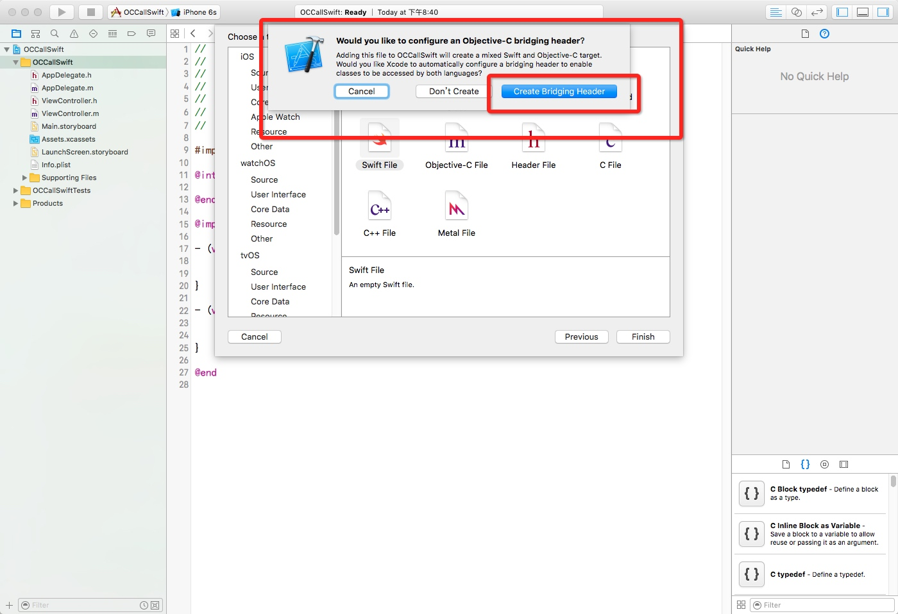
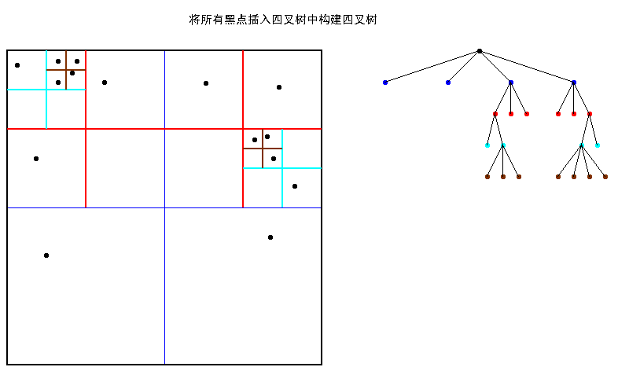
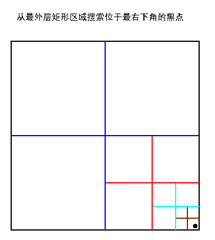

UIViewController *rootVC = self.presentingViewController;
while (rootVC.presentingViewController) {
rootVC = rootVC.presentingViewController;
}
[rootVC dismissViewControllerAnimated:YES completion:nil];
if ([rootVC isKindOfClass:[UINavigationController class]]) {
for (UIViewController* controller in rootVC.childViewControllers) {
if ([controller isKindOfClass:[MapViewController class]]) {
[(UINavigationController *)rootVC popToViewController:controller animated:YES];
}
}
}
Sqlite 存储自定义对象
在iOS中如果想保存自定义对象，要让自定义对象实现NSCoding接口并实现方法-(id)initWithCoder:(NSCoder *)coder和-(void)encodeWithCoder:(NSCoder *)coder;
@interface RegUserInfo : NSObject <NSCoding>
@property (nonatomic, strong) NSString *siteName；
@end
@@implementation RegUserInfo
-(void) encodeWithCoder:(NSCoder *)encoder {
[encoder encodeObject:siteName forKey:@"siteName"];
}
-(id) initWithCoder:(NSCoder *)decoder {
siteName = [decoder decodeObjectForKey:@"siteName"];
return self;
}
//两个方法中的key必须一致
@end
如果项目中使用了mjextention，可以直接在.m文件中调用MJCodingImplementation
@interface MarkerUniformConfig : NSObject<NSCoding>//需要继承NSCoding
@property(nonatomic,strong)NSString* icon_id;
@end
@implementation MarkerUniformConfig
MJCodingImplementation//这里会自动完成属性序列化过程
@end
iOS角度与弧度转换
在iOS中图片的旋转单位为弧度而不是角度，所以经常会在两者之间进行转换
- 弧度转角度
#define RADIANS_TO_DEGREES(radians) ((radians) * (180.0 / M_PI))
- 角度转弧度
#define DEGREES_TO_RADIANS(angle) ((angle) / 180.20 * M_PI)
摘自：角度与弧度的转换
角度弧度定义
“ 弧度”和“度”是度量角大小的两种不同的单位。
度
两条射线从圆心向圆周射出，形成一个夹角和夹角正对的一段弧。当这段弧长正好等于圆周长的360分之一时，两条射线的夹角的大小为1度。
弧度
两条射线从圆心向圆周射出，形成一个夹角和夹角正对的一段弧。当这段弧长正好等于圆的半径时，两条射线的夹角大小为1弧度。

口诀：:π是π弧度，180是180度。我要化成什么单位，就要把有这个单位的放在分子上。也就是说我要化成弧度，就要把π弧度放在分子上－－乘以π/180
转自：弧度与角度的关系
JokeClient-Swift 仿写学习
required init?(coder aDecoder: NSCoder) 可失败构造器
在init关键字后面添加问号(init?)。
可失败构造器会创建一个类型为自身类型的可选类型的对象。你通过return nil语句来表明可失败构造器在何种情况下应该“失败”。
struct Animal {
let species: String
init?(species: String) {
if species.isEmpty { return nil }
self.species = species
}
}
2、 as、as!、as?三种类型转换操作符使用详解
as使用场合
1、从派生类转换为基类，向上转型（upcasts）
class Animal {}
class Cat: Animal {}
let cat = Cat()
let animal = cat as Animal
2.消除二义性，数值类型转换
let num1 = 42 as CGFloat
let num2 = 42 as Int
let num3 = 42.5 as Int
let num4 = (42 / 2) as Double
3. switch 语句中进行模式匹配
如果不知道一个对象是什么类型，你可以通过switch语法检测它的类型，并且尝试在不同的情况下使用对应的类型进行相应的处理
switch animal {
case let cat as Cat:
print("如果是Cat类型对象，则做相应处理")
case let dog as Dog:
print("如果是Dog类型对象，则做相应处理")
default: break
}
as!使用场合
as? 和 as! 操作符的转换规则完全一样。但 as? 如果转换不成功的时候便会返回一个 nil 对象。成功的话返回可选类型值（optional），需要我们拆包使用。
由于 as? 在转换失败的时候也不会出现错误，所以对于如果能确保100%会成功的转换则可使用 as!，否则使用 as?
let animal:Animal = Cat()
if let cat = animal as? Cat{
print("cat is not nil")
} else {
print("cat is nil")
}
转自：Swift - as、as!、as?三种类型转换操作符使用详解（附样例）
方法的局部参数名称和外部参数名称
函数参数可以同时有一个局部名称（在函数体内部使用）和一个外部名称（在调用函数时使用），详情参见函数的外部参数名。方法参数也一样（因为方法就是函数，只是这个函数与某个类型相关联了）。但是，方法和函数的局部名称和外部名称的默认行为是不一样的。
STATIC 和 CLASS
Swift 中表示 “类型范围作用域” 这一概念有两个不同的关键字，它们分别是 static 和 class。
有一个比较特殊的是 protocol。在 Swift 中 class，struct 和 enum 都是可以实现某个 protocol 的。那么如果我们想在 protocol 里定义一个类型域上的方法或者计算属性的话，应该用哪个关键字呢？答案是使用 static 进行定义。在使用的时候，struct 或 enum 中仍然使用 static，而在 class 里我们既可以使用 class 关键字，也可以用 static，它们的结果是相同的
现在只需要记住结论，在任何时候使用 static 应该都是没有问题的。
ANY 和 ANYOBJECT
Any 和 AnyObject 是 Swift 中两个妥协的产物，也是很让人迷惑的概念。
AnyObject 可以代表任何 class 类型的实例
Any 可以表示任意类型，甚至包括方法 (func) 类型
Swift 最主要的用途依然是使用 Cocoa 框架进行 app 开发，因此为了与 Cocoa 架构协作，将原来 id 的概念使用了一个类似的，可以代表任意 class 类型的 AnyObject 来进行替代。
在 Swift 中编译器不仅不会对 AnyObject 实例的方法调用做出检查，甚至对于 AnyObject 的所有方法调用都会返回 Optional 的结果。
Swift 中所有的基本类型，包括 Array 和 Dictionary 这些传统意义上会是 class 的东西，统统都是 struct 类型，并不能由 AnyObject 来表示，于是 Apple 提出了一个更为特殊的 Any，除了 class 以外，它还可以表示包括 struct 和 enum 在内的所有类型。
SELECTOR
在 Swift 中没有 @selector 了，取而代之，从 Swift 2.2 开始我们使用 #selector 来从暴露给 Objective-C 的代码中获取一个 selector。
func callMe() {
//...
}
func callMeWithParam(obj: AnyObject!) {
//...
}
func turnByAngle(theAngle: Int, speed: Float) {
//...
}
let someMethod = #selector(callMe)
let anotherMethod = #selector(callMeWithParam(_:))
let method = #selector(turnByAngle(_:speed:))
最后需要注意的是，selector 其实是 Objective-C runtime 的概念，如果你的 selector 对应的方法只在 Swift 中可见的话 (也就是说它是一个 Swift 中的 private 方法)，在调用这个 selector 时你会遇到一个 unrecognized selector 错误：
//错误：
private func callMe() {
//...
}
NSTimer.scheduledTimerWithTimeInterval(1, target: self,
selector:#selector(callMe), userInfo: nil, repeats: true)
//正确
@objc private func callMe() {
//...
}
NSTimer.scheduledTimerWithTimeInterval(1, target: self,
selector:#selector(callMe), userInfo: nil, repeats: true)
最后，值得一提的是，如果方法名字在方法所在域内是唯一的话，我们可以简单地只是用方法的名字来作为 #selector 的内容。相比于前面带有冒号的完整的形式来说，这么写起来会方便一些：
let someMethod = #selector(callMe)
let anotherMethod = #selector(callMeWithParam)
let method = #selector(turnByAngle)
但是，如果在同一个作用域中存在同样名字的两个方法，即使它们的函数签名不相同，Swift 编译器也不允许编译通过：
func commonFunc() {
}
func commonFunc(input: Int) -> Int {
return input
}
let method = #selector(commonFunc)
// 编译错误，`commonFunc` 有歧义
对于这种问题，我们可以通过将方法进行强制转换来使用：
let method1 = #selector(commonFunc as ()->())
let method2 = #selector(commonFunc as Int->Int)
转自：SELECTOR
guard
swift 2.0 带来了 guard 语句，这里主要用来与 if 来做比较
//好的写法
func createPerson() throws -> Person {
guard let age = age, let name = name
where name.characters.count > 0 && age.characters.count > 0 else {
throw InputError.InputMissing
}
guard let ageFormatted = Int(age) else {
throw InputError.AgeIncorrect
}
return Person(name: name, age: ageFormatted)
}
//差的写法
func createPersonNoGuard() -> Person? {
if let age = age, let name = name
where name.characters.count > 0 && age.characters.count > 0
{
if let ageFormatted = Int(age) {
return Person(name: name, age: ageFormatted)
} else {
return nil
}
} else {
return nil
}
}
使用 guard 可以很容易地看到 Person 实例的返回值，这样就能明白这个方法的主要目的是什么
App应考虑到的一些东西
摘自：iOS应用架构谈
• 如何让业务开发工程师方便安全地调用网络API？然后尽可能保证用户在各种网络环境下都能有良好的体验？
• 页面如何组织，才能尽可能降低业务方代码的耦合度？尽可能降低业务方开发界面的复杂度，提高他们的效率？
• 当数据有在本地存取的需求的时候，如何能够保证数据在本地的合理安排？如何尽可能地减小性能消耗？
• iOS应用有审核周期，如何能够通过不发版本的方式展示新的内容给用户？如何修复紧急bug？
针对团队：
• 收集用户数据，给产品和运营提供参考
• 合理地组织各业务方开发的业务模块，以及相关基础模块
• 每日app的自动打包，提供给QA工程师的测试工具
第一步：搞清楚要解决哪些问题，并找到解决这些问题的充要条件
第二步：问题分类，分模块
第三步：搞清楚各问题之间的依赖关系，建立好模块交流规范并设计模块
第四步：推演预测一下未来可能的走向，必要时添加新的模块，记录更多的基础数据以备未来之需
第五步：先解决依赖关系中最基础的问题，实现基础模块，然后再用基础模块堆叠出整个架构
第六步：打点，跑单元测试，跑性能测试，根据数据去优化对应的地方
OC 调用 Swift 代码
1、 创建新的OC项目工程，命名为OCCallSwift

2、 新建Swift文件，如果项目中没有Bridging header文件的话会提示你创建


OCCallSwift-Swift.h头文件

3、编写Swift文件代码方法
import Foundation
class SwiftUtil: NSObject {
func calledByOC(info:String) -> Void {
print("\(info) ,swift 方法被调用了")
}
}
4、编写Controller文件
导入头文件#import "OCCallSwift-swift.h"，头文件格式为 项目名称-swift.h，之后重新编译一下工程，之后就可以像调用普通类一样调用Swift方法了。
#import "ViewController.h"
#import "OCCallSwift-swift.h"
@interface ViewController ()
@end
@implementation ViewController
- (void)viewDidLoad {
[super viewDidLoad];
SwiftUtil* util = [[SwiftUtil alloc] init];
[util calledByOC:@"从OC 调用"];
}
- (void)didReceiveMemoryWarning {
[super didReceiveMemoryWarning];
}
@end
IOS常用转译字符
| 转移字符 | 含义 |
|---|---|
| \b | 退格 |
| \n | 换行 |
| \r | 回车 |
| " | 双引号 |
| \' | 单引号 |
| && | & |
xcode运行到真机报错 While reading xx/BackgroundHomeScreen_5.png pngcrush caught libpng error:
转载：http://blog.csdn.net/kafeidev/article/details/8976756
原因是提示的png并不是ps到处的png，而是手动修改jpeg后缀名为png，在模拟器上不会报错，但在真机，不识别这种所谓的“png”图片。
解决方案：
用ps重新导出png就ok了
时间差
转载：http://www.isaced.com/post-213.html
NSDate* tmpStartData = [NSDate date];
//You code here...
double deltaTime = [[NSDate date] timeIntervalSinceDate:tmpStartData];
NSLog(@"cost time = %f", deltaTime);
NSDate* dat = [NSDate dateWithTimeIntervalSinceNow:0];
NSTimeInterval a=[dat timeIntervalSince1970]*1000;
NSString *timeString = [NSString stringWithFormat:@"%f", a];／／转为字符型
#import <mach/mach_time.h> // for mach_absolute_time() and friends
CGFloat BNRTimeBlock (void (^block)(void)) {
mach_timebase_info_data_t info;
if (mach_timebase_info(&info) != KERN_SUCCESS) return -1.0;
uint64_t start = mach_absolute_time ();
block ();
uint64_t end = mach_absolute_time ();
uint64_t elapsed = end - start;
uint64_t nanos = elapsed * info.numer / info.denom;
return (CGFloat)nanos / NSEC_PER_SEC;
}
BOOL / bool / Boolean / NSCFBoolean 区别
| Name | Typedef | Header | True Value | False Value |
|---|---|---|---|---|
| BOOL | signed char | objc.h | YES | NO |
| bool | _Bool (int) | stdbool.h | true | false |
| Boolean | unsigned char | MacTypes.h | True | False |
| NSNumber | __NSCFBoolean | Foundation.h | @(YES) | @(NO) |
| CFBooleanRef | struct | CoreFoundation.h | kCFBooleanTrue | kCFBooleanFalse |
解决xcode升级之后安装的插件失效
code升级之后uuid会发生变化，致使原来的plugin失效
解决方案
find ~/Library/Application\ Support/Developer/Shared/Xcode/Plug-ins -name Info.plist -maxdepth 3 | xargs -I{} defaults write {} DVTPlugInCompatibilityUUIDs -array-add
defaults read /Applications/Xcode.app/Contents/Info.plist DVTPlugInCompatibilityUUIDfind every plugin's Info.plist
default read current UUID of XCode
default write current UUID of XCode into plugin's DVTPlugInCompatibilityUUIDs
from:stackoverflow
四叉树算法
转载：http://blog.csdn.net/zhanxinhang/article/details/6706217
四叉树或四元树也被称为Q树（Q-Tree）。四叉树广泛应用于图像处理、空间数据索引、2D中的快速碰撞检测、存储稀疏数据等，而八叉树（Octree）主要应用于3D图形处理。对游戏编程，这会很有用。本文着重于对四叉树与八叉树的原理与结构的介绍，帮助您在脑海中建立四叉树与八叉树的基本思想。本文并不对这两种数据结构同时进行详解，而只对四叉树进行详解，因为八叉树的建立可由四叉树的建立推得。
四叉树与八叉树的结构与原理
四叉树（Q-Tree）是一种树形数据结构。四叉树的定义是：它的每个节点下至多可以有四个子节点，通常把一部分二维空间细分为四个象限或区域并把该区域里的相关信息存入到四叉树节点中。这个区域可以是正方形、矩形或是任意形状。以下为四叉树的二维空间结构(左)和存储结构(右)示意图（注意节点颜色与网格边框颜色）：

四叉树的每一个节点代表一个矩形区域（如上图黑色的根节点代表最外围黑色边框的矩形区域），每一个矩形区域又可划分为四个小矩形区域，这四个小矩形区域作为四个子节点所代表的矩形区域。
较之四叉树，八叉树将场景从二维空间延伸到了三维空间。八叉树（Octree）的定义是：若不为空树的话，树中任一节点的子节点恰好只会有八个，或零个，也就是子节点不会有0与8以外的数目。那么，这要用来做什么？想象一个立方体，我们最少可以切成多少个相同等分的小立方体？答案就是8个。如下八叉树的结构示意图所示：

/* 一个矩形区域的象限划分：:
UL(1) | UR(0)
----------|-----------
LL(2) | LR(3)
以下对该象限类型的枚举
*/
typedef enum
{
UR = 0,
UL = 1,
LL = 2,
LR = 3
}QuadrantEnum;
/* 矩形结构 */
typedef struct quadrect_t
{
double left,
top,
right,
bottom;
}quadrect_t;
/* 四叉树节点类型结构 */
typedef struct quadnode_t
{
quadrect_t rect; //节点所代表的矩形区域
list_t *lst_object; //节点数据, 节点类型一般为链表，可存储多个对象
struct quadnode_t *sub[4]; //指向节点的四个孩子
}quadnode_t;
/* 四叉树类型结构 */
typedef struct quadtree_t
{
quadnode_t *root;
int depth; // 四叉树的深度
}quadtree_t;
四叉树的建立
利用四叉树分网格，如本文的第一张图，根据左图的网格图形建立如右图所示的完全四叉树。
伪码：
Funtion QuadTreeBuild ( depth, rect )
{
QuadTree->depth = depth;
/*创建分支，root树的根，depth深度，rect根节点代表的矩形区域*/
QuadCreateBranch ( root, depth, rect );
}
Funtion QuadCreateBranch ( n, depth,rect )
{
if ( depth!=0 )
{
n = new node; //开辟新节点
n ->rect = rect; //将该节点所代表的矩形区域存储到该节点中
将rect划成四份 rect[UR], rect[UL], rect[LL], rect[LR];
/*创建各孩子分支*/
QuadCreateBranch ( n->sub[UR], depth-1, rect [UR] );
QuadCreateBranch ( n->sub[UL], depth-1, rect [UL] );
QuadCreateBranch ( n->sub[LL], depth-1, rect [LL] );
QuadCreateBranch ( n->sub[LR], depth-1, rect [LR] );
}
}
假设在一个矩形区域里有N个对象，如下左图一个黑点代表一个对象，每个对象的坐标位置都是已知的，用四叉树的一个节点存储一个对象，构建成如下右图所示的四叉树。

方法也是采用递归的方法对该矩形进行划分分区块，分完后再往里分，直到每一个子矩形区域里只包含一个对象为止。
伪码：
Funtion QuadtreeBuild()
{
Quadtree = {empty}；
For (i = 1;i<n;i++) //遍历所有对象
{
QuadInsert(i, root)；//将i对象插入四叉树
}
剔除多余的节点； //执行完上面循环后，四叉树中可能有数据为空的叶子节点需要剔除
}
Funtion QuadInsert(i,n) //该函数插入后四叉树中的每个节点所存储的对象数量不是1就是0
{
if（节点n有孩子）
{
通过划分区域判断i应该放置于n节点的哪一个孩子节点c；
QuadInsert(i,c)；
}
else if（节点n存储了一个对象）
{
为n节点创建四个孩子；
将n节点中的对象移到它应该放置的孩子节点中；
通过划分区域判断i应该放置于n节点的哪一个孩子节点c；
QuadInsert(i,c)；
}
else if（n节点数据为空）
{
将i存储到节点n中；
}
}
用四叉树查找某一对象
1、采用盲目搜索，与二叉树的递归遍历类似，可采用后序遍历或前序遍历或中序遍历对其进行搜索某一对象，时间复杂度为O（n）。
2、根据对象在区域里的位置来搜索，采用分而治之思想，时间复杂度只与四叉树的深度有关。比起盲目搜索，这种搜索在区域里的对象越多时效果越明显

Funtion find ( n, pos, )
{
If (n节点所存的对象位置为 pos所指的位置 )
Return n;
If ( pos位于第一象限 )
temp = find ( n->sub[UR], pos );
else if ( pos位于第二象限)
temp = find ( n->sub[UL], pos );
else if ( pos位于第三象限 )
temp = find ( n->sub[LL], pos );
else //pos 位于第四象限
temp = find ( n->sub[LR], pos );
return temp;
}
NSDictionary不能写入文件
问题：
调用字典- (BOOL)writeToURL:(NSURL *)url atomically:(BOOL)atomically;写入文件失败
分析原因：
字典中有null值，所以需要NSKeyedArchiver将之转化为NSData后再写入文件
NSDictionary中的数据：
{
style = <null>,
status = 1,
title = "new",
source = 1,
mid = "1iJltVKJ14kLn3sZgo3wCg",
user_id = 10011,
updated_at = "2016-05-27T20:10:50.000+08:00",
city_code = 131,
permission = "grp",
city = "北京市",
backup_time = <null>,
is_del = 0,
id = 94445,
level = 12,
org_id = 10011,
base_map = "normal",
rqcode = "/uploads/rqcode/1iJltVKJ14kLn3sZgo3wCg.png",
avatar = "/uploads/avatars/2016/5/11/8ed403c6652f4d599f1e50daa89c427e.png",
center = "116.403874,39.914889",
created_at = "2016-05-11T15:08:43.000+08:00",
rating = 0,
description = "",
}
解决方法：
//写入
NSString* path = [[FileUtil dirCache] stringByAppendingPathComponent:@"EDITMAP"];
BOOL success = [[NSKeyedArchiver archivedDataWithRootObject:_mapArray[indexPath.row]] writeToFile:path atomically:YES];
//读取
NSData* data = [[NSData alloc]initWithContentsOfFile:[[FileUtil dirCache] stringByAppendingPathComponent:@"EDITMAP"]];
NSDictionary* dic = (NSDictionary*)[NSKeyedUnarchiver unarchiveObjectWithData:data];
iOS版本更新
#pragma mark - 检查版本更新
#define APP_URL @"http://itunes.apple.com/lookup?id=你的apple id"
-(void)onCheckVersion
{
NSString* currentVersion = [[NSBundle mainBundle] objectForInfoDictionaryKey:@"CFBundleShortVersionString"];
NSString *URL = APP_URL;
AFHTTPRequestOperationManager *manager = [AFHTTPRequestOperationManager manager];
manager.requestSerializer = [AFJSONRequestSerializer new];
manager.responseSerializer = [AFJSONResponseSerializer new];
[manager POST:URL parameters:nil success:^(AFHTTPRequestOperation * _Nonnull operation, id _Nonnull responseObject) {
NSArray *infoArray = [responseObject objectForKey:@"results"];
if ([infoArray count]) {
NSDictionary *releaseInfo = [infoArray objectAtIndex:0];
NSString *lastVersion = [releaseInfo objectForKey:@"version"];
if (![lastVersion isEqualToString:currentVersion]) {
NSString* trackViewURL = [releaseInfo objectForKey:@"trackViewUrl"];
UIAlertView *alert = [[UIAlertView alloc] initWithTitle:@"更新" message:[releaseInfo objectForKey:@"releaseNotes"] delegate:self cancelButtonTitle:@"关闭" otherButtonTitles:@"更新", nil] ;
[alert showAlertViewWithCompleteBlock:^(NSInteger buttonIndex) {
if (buttonIndex==1) {
UIApplication *application = [UIApplication sharedApplication];
[application openURL:[NSURL URLWithString:trackViewURL]];
}
}];
}
}
} failure:^(AFHTTPRequestOperation * _Nullable operation, NSError * _Nonnull error) {
}];
}
App字体被放大
分析原因：
由于新版本上线更换了LaunchImage,没有注意美工给的图片尺寸，由于图片尺寸不符合标准导致程序在真机上运行所有字体被放大显示发虚
解决：
将LaunchImage的所有尺寸按照要求从新剪裁设置即可。